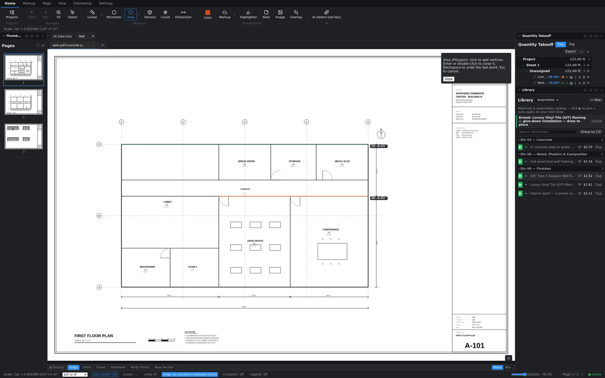
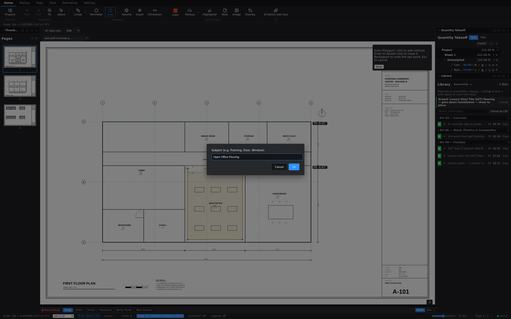

Where the library lives
The Library panel sits in the right dock, just below the Quantity Takeoff tree. It's your catalog of priced assemblies, grouped by CSI division — concrete under 03, finishes under 09, and so on. Each row is a complete recipe: the materials, consumption rates, waste factors, and labor that go into one unit of measured work. If the panel isn't visible, turn it on from the View tab's panel toggles.

Arm an assembly, then draw
The core workflow is two steps: arm, then draw. Arming tells Groundwork Takeoff "the next thing I measure is this scope of work."
- Find the assembly in the Library — say, Luxury Vinyl Tile (LVT) flooring — glue-down installation.
- Click the green ▶ arm button on its row. A green banner appears across the top of the canvas: "Armed: … — draw to place," with a Cancel button if you change your mind.
- Draw the measurement with whichever tool fits the scope — trace the room with the Area tool, run a wall with Linear, or drop Count markers.
- When you commit the shape, it lands in the takeoff tree already attached to the assembly — quantity, materials, and labor priced from the recipe.

One measurement, a full breakdown
In the Quantity Takeoff tree, an assembly-backed measurement isn't a single line — it expands into its material and labor children, each converted to its own unit. Draw a 112 SF break-room slab against a concrete assembly and the tree shows Ready-Mix in cubic yards, rebar in pounds, and vapor barrier in square feet underneath it. An LVT room breaks down into flooring, adhesive, and leveling; a paint scope into primer and finish coats. The conversion math runs the moment the shape commits, and the same breakdown flows straight into the estimate grid.
Name it with the Subject prompt
As a measurement commits, the Subject modal asks what you just measured — e.g. Framing, Door, Window, or something project-specific like "Open Office Flooring." Type a name and click OK. That subject is how the row reads in the takeoff tree, the markups list, and your exports, so a few keystrokes here saves you hunting through anonymous shapes later.
